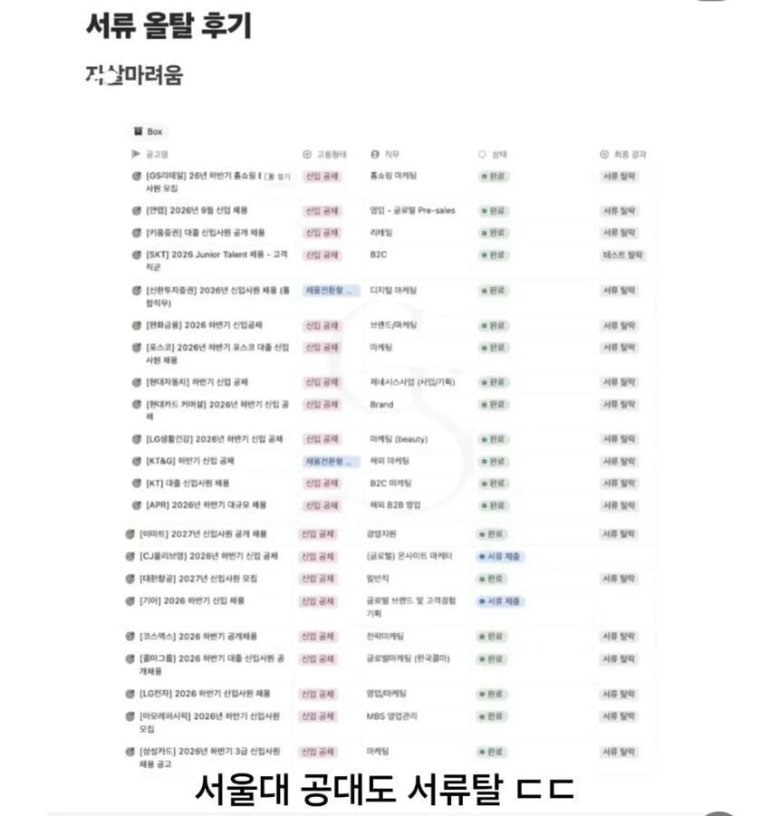

https://gall.dcinside.com/board/view/?id=pgschool&no=137502
아래는 고려대 문과

깔끔하게 하반기 올킬
바이오는 제약사 50위 수준 회사도 광탈 하던데
https://gall.dcinside.com/board/view/?id=pgschool&no=137502

깔끔하게 하반기 올킬
바이오는 제약사 50위 수준 회사도 광탈 하던데
ㅇㅇ...나도 가끔 졸업한 제자들 자소서 첨삭해주는데 엉망진창임...
위아래 같은사람 아니지?
위아래 직무가 너무 차이나는데
서울대 공대인데 왜 다 이상한 직무에 넣었음?
아래는 고려대였음
밑에사진은 선동용임? ㅋㅋ
다른얘사진을 왜같이퍼오냐
얘라고 하는 놈이 취업상황에 대해 논하네
항공우주아니었나 밑에 거는 또 다른 놈이고 점점 바뀌네ㅋㅋㅋㅋ
ㅋㅋㅋㅋㅋㅋ 사진 합쳐놓고 선동 존1나하네
서울대 기계공이 대기업 취업 못했다는건 그냥 씹구라임
현차 우리팀 한명뽑았는데.. 바늘구멍이긴해 채용진짜 박터짐
게다가 중고신입이랑도 싸워야함
근데 서연고면 진짜 인생 갈면서 공부한 애들인데 과 상관없이 취업 안된다는건, 문제가 존나 많은건데 자꾸 뭐 과가 어쩌구 활동이 어쩌구 헛소리하더라
내가 16학번인데 졸업할 때에도 ㅈㄴ 얼척없긴햇음
나름 ㄱㅊ은 대학교 나오고 괜찮은 스펙인데도 취업이안됨.
그때부터 걍 사회가 ㅂㅅ이고 면접을 어케 준비하니 이런거 다 마케팅용 씹소리라고 판단햇는데
지금도 그 헛소리한 유튜바 새끼들 잘 살아잇나 궁금함
대기업만 지원하지말고 중견, 중소에도 눈을 돌려봐
학벌 너무 높으면 안뽑기도함
도망간다고 ㅋㅋㅋ
헉
근데 중견은 되는데
나도 그랬고
서울대 기계공이면 중견에선 오버스펙으로 컷날수도있음 ㅋㅋ
오히려 학벌 높으면 나중에 짬 차고 도망갈거 뻔해서 떨어지기도 함..
저번에 어디 대기업 합격자 보니까 연고대 석사는 해야 하나보더라ㄷㄷ
일단 위아래짤은 다른 전공/학벌같고 서울대 공대 3.9로 면접이 아니라 서류로 학사직무에 탈락한거면 자소서에 중대한 문제가 있을듯 심지어 방산, 항공우주쪽이 설계쪽에서 선호도 1순위도 아님
힘들긴 한가보네.
보수적인 대기업은 요즘 40대가 부서 막내인 곳들이 있다더라
취업을 개인의 책임만으로 돌리면 안되는 시대가 되었음
제동이형 재등판?
취업을 개인의 잘못으로 만들면 취업시장은 영원히 좋아지지 않을 것임.
정부가 역할을 못해서 취업시장이 병신된 거임.
얼마전 올라온 실업급여 꿀빤다고 개소리한 글도 개 병신같은 논리임.. 실업급여 줄이면 그만큼 정부에서 실업자에 대한 대책을 안세우게 된다..
처음으로 돌아가서 취업을 개인의 잘못으로 돌리지 마라.. 양질의 일자리가 늘어나지 않게 된다.
쟤도 노력을 안한거임?
빨리 태어날 노오력을 했어야지 ㅋㅋㅋㅋ
밑은 고려대 문과였을텐데 근데 서탈할 정도면 솔직히 얼마나 못쓴건지라는 생각이 듦 우리 회사도 있는데 서류 잘 붙여주는데
요즘 신입 채용도 경력자가 한가득이야
방산은 원래 신입들 잘 안뽑고, 신입도 석박사 선호하고, 연구소 경력직들 선호하는 경향 큰 직종임... 방산 빅3 떨어졌으니 취업 안된다고 하는건 너무 억까인데
학력으로 그냥 뚫는건 뭐 00년대 얘기고...
지금은 명확하게 양질의 자소서 또는 이력서와
적당한 경험/경력 사항과 지원업계 필수 자격정도는 있어야
네임드급 기업들 서류통과 해보는거지
나 00대학 ㅇㅇ과인데 학점 ㅇㅇ점에 서류 광탈이다...
이런 글들 보면 하나같이 지 경험경력이나 자격사항 말 안해줌
그리고 굳이 찾아보면 없거나 개판인게 부지기수고
울회사 개좃소인데 서성한 보이기 시작함 ㄹㅇ 취업시장 개망했음 대기업 이직은 꿈도못꿀듯 ㅠㅠ
이런 병신틀딱댓글들ㅋㅋㅋ지금 취업상황도 모르면서 지들때 생각만 하네
학벌 좋은데 이력서, 졸업증명서 타회사 제출용으로 내는 병신들도 많음 그만큼 지원하면서 관심도 안가졌다는건데 다 광탈이지머 근데 취업문도 좁긴함 지원할때 이력서 같은거 좀 확인이라도 해서 광탈안하게 신경써 ㅠ
개드립 틀딱들 시대 못따라가서 헛소리하는거 존나웃기네 ㅋㅋㅋㅋ
지네 20대때는 틀딱들이 노오력타령하면 뭔포세대니 지랄하고 틀딱시절엔 뭐 어쩌고 저쩌고 하면서 지랄하다가
아랫세대가 힘들다 하니까
"제대로 안한거 아님?" 이지랄 ㅋㅋㅋㅋ 내로남불은 개평 ㅋㅋ
솔직히 이정도면 이력서를 제대로 썼는지 의심이 가는데?? 이력서 보면 진짜 개판인 새끼들이 한 둘이 아님... 자기소개서??
자기 정도 스펙이면 충분히 붙을거라고 생각했는지 그냥 복붙임... 이전 지원했던 회사 이름도 그대로 써서...
그런 애들이 한둘이 아니라 거진 3~4%임.. ㅋㅋㅋ